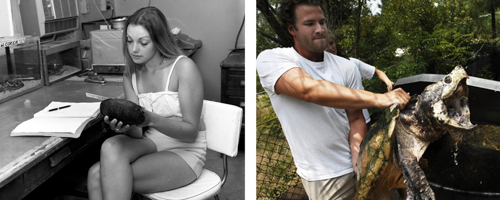
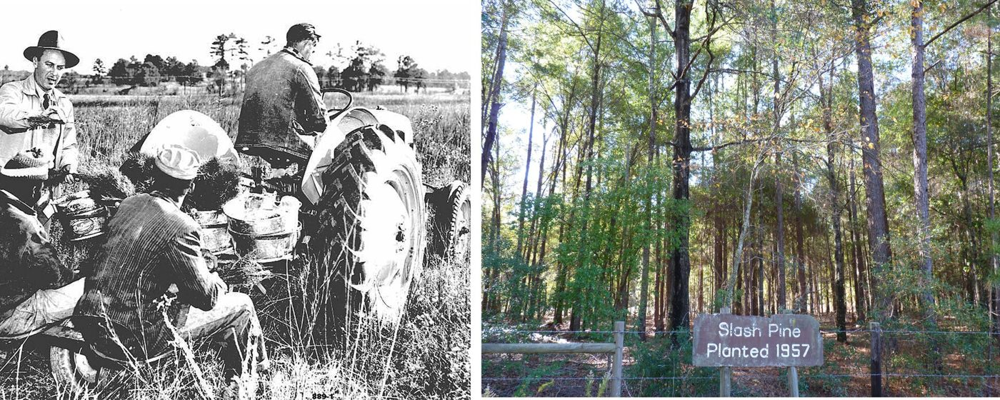
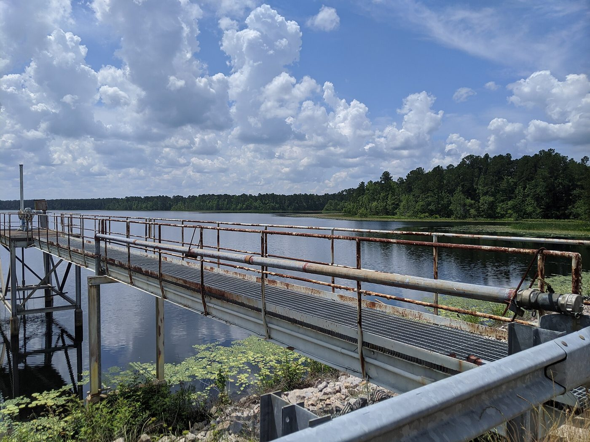

Part 7 of 7 in Chapter 1
SRS and Ecology
Before the reactors ran, the river was surveyed. Ruth Patrick of the Academy of Natural Sciences made a baseline survey in 1951 (WB: srs.gov 1950s), and the Public Health Service sampled the river's water and its natural radioactivity in 1951–52 (IA; IA).
In 1951 the AEC (Atomic Energy Commission) asked the University of Georgia and the University of South Carolina to survey the land's plants and animals before construction began, offering each about $10,000 a year (WB: SRS at Fifty ch. 17). The Georgia team was led by Eugene Odum, whose 1953 textbook Fundamentals of Ecology made him known as the "father of modern ecosystem ecology" (WB: ch. 17; IA; IA).
Georgia's survey grew into a research program. Its Laboratory of Radiation Ecology, with a staff of 15, exposed plants and animals to controlled doses of radiation to learn what it does to them in the wild (WB: ch. 17). The work became a permanent laboratory in 1961 (WB: srs.gov 1960s) — the Savannah River Ecology Laboratory, run by the University of Georgia, which dates its own founding to 1951 (WB: SREL). In the 1960s its scientists were, in the official history's words, "at the heart of" the new idea of the ecosystem: what one is and how it works (WB: ch. 17).

.jpg){kind=link}
Much of the land had been worked hard. When the government took it, about two-thirds was forest, most of it already logged, and a third was cropland or pasture (IA: SREL scientists, 2002). In 1952 the AEC and the U.S. Forest Service agreed to manage the land together, and the Forest Service's first job was planting trees "by the thousands" on old farms (DL: Forest Service, 1995).

.jpg){kind=link}
The site and its reactors changed the local streams and watershed. Lower Three Runs Creek was dammed in 1958 to make Par Pond, a cooling reservoir, and the reactors sent hot water down creeks such as Steel Creek (IA: L-Reactor environmental impact statement, 1984).

.jpg){kind=link}
By the end of the 1960s the plant had done what it was built for. Its reactors had made plutonium and tritium for more than a decade, and two of them had already closed as demand fell (Running the Plant). Its land had also become a place to study, with forests replanted, ecologists at work and a record of what it released. The 1970s brought new environmental laws and a public that wanted to know more, and the plant came under scrutiny, as Chapter 2 tells.
Follow this thread, the land and its wildlife. Continues in Chapter 2, SRS and Ecology; Chapter 3, SRS and Ecology; Chapter 3, The Laboratories; Chapter 4, Ecology and the SRS.